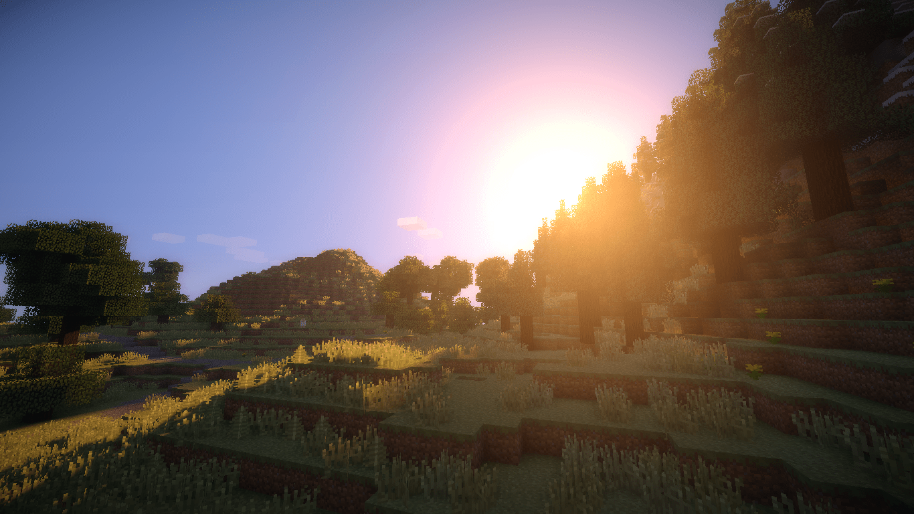
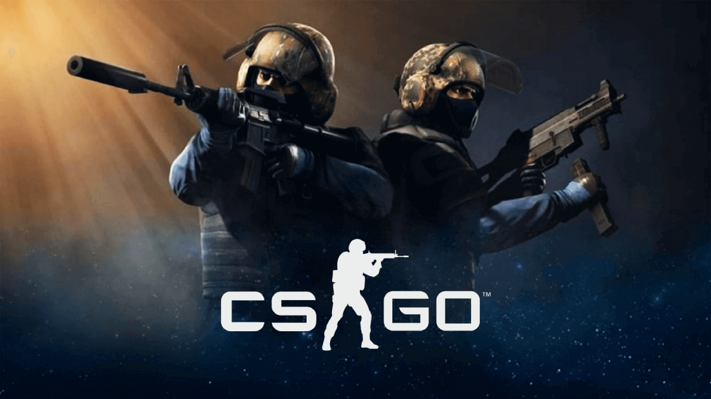
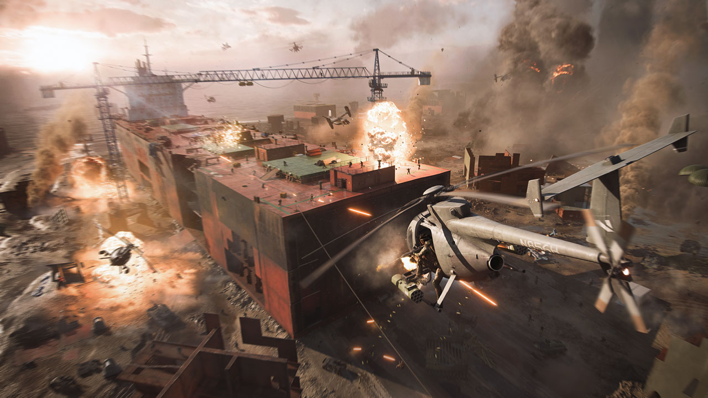

Meine Lieblingsgames
Minecraft
Minecraft ist ein Sandbox-Videospiel entwickelt von Mojang Studios. In dem Spiel besteht alles aus Blöcken und man kämpft um sein Überleben. Es gibt neben normalen Tieren, böswillige Kreaturen (Mobs) die man bekämpfen kann. Neben dem Bekämpfen von Kreaturen und dem Bauen von Dingen mit den Blöcken muss / kann man seine Werkzeuge und Rüstungen verbessern, Festungen mithilfe von Karten und Wegweisern finden und schlussendlich den "Enderdrachen" im "Ende" besiegen. Man kann Minecraft nicht nur alleine sondern auch auf Servern mit vielen Anderen Leuten in vielen verschiedenen Spielmodi spielen.
Ich liebe an Minecraft die Vielseitigkeit und die eigene Kreativität die man gebrauchen kann. Ebenfalls liebe ich die Spielmodi auf allen möglichen Servern, die man mit vielen anderen Menschen und Freunden spielen kann.
CS:GO
In CS:GO (Counnter Strike Global Offensive) geht es darum, dass sich zwei verschiedene Teams in einer Map gegenseitig bekämpfen. Die Teams sind die Terroristen (T) und Anti-Terroristen (CT). Die beiden Teams bekämpfen sich dabei mit realistischen Waffen, die am Anfang jeder Runde mit dem ersparten Geld gekauft werden können. Daneben kann man diverse Granaten, Ausrüstung und andere Gadgets kaufen.
Am Rundenanfang spawnen (auftauchen) die fünf Leute pro Team an den jeweiligen Team-Spawnorten, wo dann beide gleichzeitig loslegen können. Die Terroristen müssen eine Bombe an einem von zwei vorgegebenen Orten (ca. 10 x 10 Meter) platzieren, während die Anti-Terroristen die Terroristen davon abhalten müssen, indem sie die Terroristen besiegen und wenn die Bombe schon platziert ist, diese vor dem Enden des Countdowns entschärfen.
CS:GO ist ein sehr taktisches Spiel wo man sich gut kommunizieren muss innerhalb des Teams und andererseits muss man präziese sein mit den Waffen und wissen mit welchen Waffen man wo am besten ist. Ausserdem muss man siene Positionen gut wählen und sich als Team gut auf die Map verteilen.
Battlefield
Battlefield ist ein Kriegsspiel indem es wie in CS:GO zwei Teams gibt. Der Unterschied ist, dass pro Team bis zu 64 Spieler sind. Die Waffen können frei gewählt und modifiziert werden. Nach dem Start der Runde müssen die Teams von Ihrer Basis loslaufen. Zwischen den Basen der beiden Teams sind verschiedene Punkte welche erobert und eingenommen werden können, dazu müssen mehrere Teammitglieder bei einer Flagge stehen und dann wird dieser Punkt erobert.
Dann gibt es eine grosse Schlacht und die Teams probieren so viele Punkte wie möglich einzusammeln. Nach jedem Tod kann man respawnen, heisst man wird wiederbelebt. Das eigene Team verliert aber nach jedem Tod immer ein Ticket. Das Spiel geht solange, bis alle Tickets eines Teams aufgebraucht sind. Bei jedem Spiel gibt es dabei zwischen 800 und 3200 Tickets, das kommt auf das Match drauf an.
Wenn man Kills macht kann man im Rangaufsteigen und bekommt diverse Belohnungen wie neue Waffen, Gangets (z.B. Drohnen) und verschiedene Optimierungen für die Waffen (z.B. Visiere wie Termalvisiere oder 4x Visiere).

Dies ist übrigens der berümteste Battlefield Trickshot, der 2011 in Battlefield 3 entstand durch den Spieler RendeZook. Dieser Clip ist aus dem Trailer des neuen Battlefield 2042 Teil wo dieser Trickshot übernommen wurde. Beim Trickshot geht es darum, dass ein Spieler aus einem fliegenden Flugzeug springt, das hinter ihm fliegende Flugzeug mit einem Raketenwerfer zerstört und anschliessend wieder in sein eigenes Flugzeug einsteigt. Die grösste Schwierigkeit neben dem Treffen ist, dass man wieder ins Flugzeug einsteigt, da dies nicht einfach in der Luft stehen bleibt.
Quellen
- [B1] (minecraft.png) ----------- https://www.teahub.io/viewwp/ihwRhRR_minecraft-sunrise/ (24.06.22)
- [B2] (csgo.png) ----------------- https://www.gamers.at/was-ist-bei-spielern-beliebter-league-of-legends-oder-csgo/ (24.06.22)
- [B3] (battlefield2042.png) ---- https://www.wog.ch/index.cfm/details/product/122435-Battlefield-2042 (24.06.22)
- [B4] (battlefield2042.gif) ------ https://tenor.com/view/battlefield-2042-battlefield2042-fps-game-on-gif-21887861 (24.06.2022)